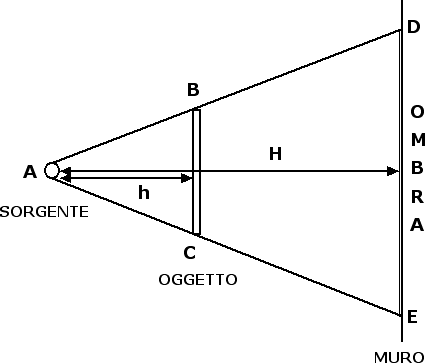

Riflessione e specchi
Modelli di luce
Nella storia della fisica la natura della luce occupa sicuramente un posto di primissimo piano. A partire dal XVII secolo infatti i fisici hanno cominciato a cercare una risposta alla domanda
Huygens, per spiegare la natura della luce, propose un'analogia con le onde che si creano in un fluido. Quando gettiamo un sasso in un fiume, nel punto in cui il sasso entra in contatto con l'acqua si crea un'onda che si propaga poi a tutti i punti vicini, allontanandosi progressivamente dal punto in cui è stata generata. In maniera analoga ogni sorgente luminosa genera delle onde che si propagano nello spazio. La differenza fondamentale tra il caso del sasso nell'acqua e una sorgente luminosa nello spazio è costituita dal fatto che l'onda generata dal sasso ha bisogno di un mezzo materiale (l'acqua) per propagarsi. La propagazione della luce può avvenire invece anche nel vuoto. È questo il motivo per cui la luce del Sole arriva fino a noi.
La difficoltà maggiore del modello di Huygens stava nel fatto che le onde hanno la capacità di aggirare e superare ostacoli di piccole dimensioni. La luce invece quando incontra un ostacolo forma ombre e penombre. Isaac Newton, partendo da questa e da altre osservazioni, formulò un modello corpuscolare di luce: ogni sorgente luminosa emette delle particelle che si propagano in linea retta (si pensi, come esempio, alla luce che filtra in una stanza buia attraverso la fessura di una porta), formando raggi luminosi che vengono poi diffusi in tutte le direzioni dagli oggetti illuminati e vanno a colpire i nostri occhi producendo così la visione.
Nelle nostre prime lezioni sulla luce useremo il modello newtoniano del raggio di luce. Questo modello usa molti concetti propri della geometria e per questo motivo è noto anche con il nome di ottica geometrica. Per fornire un esempio di come la geometria possa entrare nello studio della luce consideriamo l'esempio riportato nella seguente figura dell'ombra prodotta da una sorgente puntiforme e da un oggetto opaco:

Una sorgente luminosa puntiforme proietta l'ombra di un oggetto esteso di altezza BC su un muro, formando un'ombra molto netta di altezza DE. I triangoli ABC e ADE sono simili dal momento che hanno gli angoli a due a due uguali. Se indichiamo con h la distanza tra la sorgente e l'oggetto e con H la distanza tra la sorgente e il muro possiamo scrivere la seguente proporzione DE : BC = H : h che permette di legare tra loro le distanze tra gli oggetti e le loro dimensioni fisiche. Ad esempio, l'altezza dell'ombra DE è legata all'altezza dell'oggetto BC dalla relazione DE = BC · H / h.
Nel caso di una sorgente luminosa estesa, ossia di una sorgente avente dimensioni paragonabili a quella dell'ostacolo, i contorni dell'ombra non sono così netti ma si crea un'ombra centrale più scura circondata da una zona di penombra meno accentuata. Su questi principi fisici si basano le eclissi di Sole e di Luna.